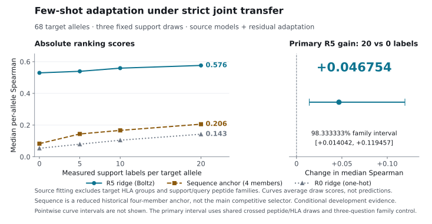

Peptide–HLA Class I Kinetic Stability · Structural Immunology & Foundation Models
Position-aware Boltz-2 trunk representations improve peptide–HLA stability ranking
For a viral or tumor peptide to trigger a CD8+ T-cell response, it must not merely bind an HLA class I molecule in equilibrium—it must remain bound at the cell surface for hours. Yet when we folded all 28,166 peptide–HLA complexes in our benchmark with Boltz-2, standard 3D structural summaries and frozen protein language model embeddings failed to improve upon a simple sequence ensemble. Interrogating the frozen Boltz-2 trunk before coordinate diffusion resolved the paradox: position-resolved peptide–groove pair representations surpass competitive sequence predictors, generalize across unseen HLA sequence groups, and calibrate to new alleles from just 20 measurements.
Why kinetic persistence matters—and why naive foundation-model features miss it
Most computational pipelines for T-cell epitope discovery rank candidate peptides by equilibrium binding affinity (Kd = koff / kon). In the endoplasmic reticulum and at the plasma membrane, however, antigen presentation is governed by a kinetic race: once a peptide–HLA class I (pMHC-I) complex reaches the cell surface, its immunogenicity depends on its dissociation half-life (t1/2 = ln 2 / koff). Across 7,281 peptide–HLA pairs with both measurements, equilibrium affinity and kinetic half-life correlate at a median within-allele Spearman ρ of only 0.580, leaving substantial variation in complex longevity unexplained by Kd alone.
When and why do modern biomolecular foundation models predict this kinetic barrier better than sequence models? Using the Rasmussen et al. (2016) scintillation proximity assay dataset (28,166 complexes across 5,633 9-mer peptides and 75 HLA alleles) together with 897,600 evaluated pairs from the MHC Motif Atlas, we trace a six-part scientific investigation: establishing what sequence ensembles already capture, validating zero-shot transfer to natural ligand elution, diagnosing why standard protein language model embeddings and 3D coordinate summaries fail, and showing how internal pairwise representations from the Boltz-2 trunk unlock both within-allele accuracy and cross-allele generalization.
- Nested CV development pairs
- 19,716
- Homology peptide clusters
- 3,587
- Eligible HLA alleles (≥20 rows)
- 69
To prevent homology leakage, all 5,633 9-mers are grouped by single-linkage Hamming distance ≤ 3 into a fixed 70 / 10 / 20 train / validation / test split (19,716 / 2,817 / 5,633 pairs). All post-baseline representation engineering and cross-allele transfer studies run strictly inside the 19,716-pair development cohort under nested 5-fold cross-validation. Primary evaluation uses the median within-allele Spearman correlation (ρ) across eligible alleles (≥20 rows), weighting every allele equally.
01 · The Baseline Paradox & Zero-Shot Elution Transfer
Sequence ensembles transfer zero-shot to natural ligand presentation, whereas naive pLM and 3D summaries fail
Any claim that foundation models improve stability prediction must first confront how much signal is already accessible from primary sequence. Within a given HLA allele, a one-way variance decomposition (η2) across peptide positions P1–P9 shows that kinetic stability is overwhelmingly concentrated at primary anchor residues P2 and P9 (plus allele-specific auxiliary anchors at P1 and P3), whereas the solvent-exposed central bulge (P4–P8) carries high sequence entropy and low marginal variance. On the held-out peptide-cluster test split (5,565 pairs across 67 eligible alleles), a 30-model multilayer perceptron (MLP) ensemble taking the 9-mer peptide and the 34 polymorphic HLA groove contact residues reaches a median within-allele Spearman ρ of 0.7064—gaining +0.0883 over a single network (0.6181) and matching an ensemble given the full 182-residue HLA α1α2 groove domain (0.6904).
Applied zero-shot to 897,600 disjoint complexes from the MHC Motif Atlas across 51 alleles, this sequence stability ensemble separated 81,600 naturally MS-eluted ligands from 816,000 human proteome decoys at a median per-allele AUROC of 0.9656 (AUPRC 0.7804; 93.9% precision in the top 1%). Even when random proteome decoys were replaced with real eluted ligands swapped from other HLA alleles—controlling for source-protein abundance, proteasomal cleavage, TAP transport, and MS ionizability—the predictor retained a median AUROC of 0.9157 (0.9562 when donor grooves differed at >14 of 34 contact positions vs 0.8906 for closely related grooves) and dropped to 0.6965 when HLA pseudosequences were cyclically permuted.
| Evaluation regime & model | Primary metric | Score | Comparison / control [95% CI or IQR] |
|---|---|---|---|
| Test-split stability ranking30-MLP sequence ensemble (9-mer + 34-aa groove) | Median Spearman ρ | 0.7064 | Reference (+0.0883 vs single MLP 0.6181) |
| Test-split stability rankingFrozen ESM-2 35M contact gather | Median Spearman ρ | 0.6979 | −0.0085 [−0.0291, +0.0233] vs sequence ensemble |
| Test-split stability rankingSequence + coarse Boltz-2 3D geometry & confidence (R1) | Median Spearman ρ | 0.5947 | −0.1117 [−0.1339, −0.0575] vs sequence ensemble |
| Zero-shot MS ligand elution30-MLP stability ensemble vs human proteome decoys (10:1) | Median AUROC | 0.9656 | IQR [0.9435, 0.9779] · AUPRC 0.7804 · Top-1% prec. 0.939 |
| Zero-shot MS ligand elutionAllele-swapped eluted-ligand decoys (presentability control) | Median AUROC | 0.9157 | IQR [0.8598, 0.9521] · Distant 0.9562 vs similar grooves 0.8906 |
| Zero-shot MS ligand elutionPermuted wrong-allele HLA pseudosequence control | Median AUROC | 0.6965 | IQR [0.5872, 0.7689] · Random null 0.4974 |
Against this validated sequence baseline, standard foundation-model strategies failed to improve ranking. Frozen ESM-2 embeddings (35M, 150M, and 650M) matched or trailed the sequence ensemble (0.6979 on test, Δρ = −0.0085). Evaluating a 650M protein–protein interaction language model (MINT) explained why: although cross-chain self-attention between the peptide and HLA chains added a reproducible +0.0193 (p = 5.0 × 10−6) over independent chain encoding, generic PPI pre-training degraded per-residue anchor specificity by −0.0800 relative to base ESM-2 650M. Worse still, folding all 28,166 heterotrimers with Boltz-2 (143.6 A10G GPU-hours) and summarizing each predicted 3D complex via 50 pocket contact counts, minimum distances, buried surface area, and pLDDT / ipTM / PAE confidence metrics (R1) reduced test ranking to 0.5947 (Δρ = −0.1117).
Sequence baseline · ESM-2 benchmark · Coarse 3D benchmark · Elution transfer
02 · Resolving the Paradox Inside the Boltz-2 Trunk
Position-preserving trunk pair representations beat competitive sequence predictors
Paired improvement in nested 5-fold CV Spearman ρ
+0.0543
95% peptide-cluster bootstrap CI [+0.0314, +0.0808]
Full 9×34 interface MLP0.7315
Sequence + R4 ridge blend0.7238
Boltz-2 embedding selector0.7212
Competitive sequence selector0.6668
Why did 28,166 predicted 3D structures hurt performance? Multi-seed variance partitioning ruled out diffusion coordinate noise as the cause: a single Boltz-2 seed already captures 99.1% of within-allele variance across all 109 geometric and confidence descriptors, and fitting an L2-shrunk linear residual model on top of frozen sequence predictions shifted 5-fold CV ρ by at most +0.0084. Instead, the bottleneck is structural representation collapse. Because every bound 9-mer adopts a nearly identical canonical backbone trace inside the MHC class I groove, scalar distance cutoffs and chain-pooled trunk states (R2, ρ = 0.4219) erase the chemical identity and electrostatic compatibility of the side chains occupying each pocket.
Prior to coordinate diffusion, however, the deterministic Boltz-2 trunk maintains a directed 128-channel pairwise representation tensor across all residue pairs. We extracted position-resolved peptide–groove pair features directly from this frozen tensor, either averaging across the 182 groove residues for each peptide position (R4, 2,304-d) or averaging over crystal-derived pocket contact residues while keeping anchors P1, P2, and P9 distinct from the central core P3–P8 (R5, 1,024-d). In nested 5-fold cross-validation across the 19,716-pair development cohort, the pre-specified Boltz-2 trunk selector lifted median within-allele Spearman ρ from 0.6668 (for a competitive sequence selector spanning standard and allele-centered 30-MLP ensembles, CatBoost trees, and pairwise rankers) to 0.7212 (Δρ = +0.0543 [+0.0314, +0.0808]). Blending a linear R4 ridge probe with the sequence ensemble reached 0.7238 (+0.0569 [+0.0426, +0.0838]), and retaining all 9 × 34 projected peptide–contact-groove pairs (full_interface_pos, 2,448-d) reached 0.7315 (+0.0647 [+0.0398, +0.0950]).
Two controlled ablations isolate why the trunk representation succeeds. First, preserving positional identity outperforms dimension-matched pooled trunk controls by +0.3387 [+0.3029, +0.3773] in projected single-token space (R3: 0.6552 vs 0.3165) and by +0.1663 [+0.1378, +0.1992] across the full 9 × 34 pair interface (0.7315 vs 0.5653). Second, replacing the crystal-derived HLA contact mask in R5 (0.7210) with randomly permuted subsets of the 34 groove residues leaves ranking unchanged (0.7203, Δρ = +0.0007 [−0.0096, +0.0236]): trunk self-attention has already propagated pocket context across the groove tokens, so preserving peptide anchor positions P1, P2, and P9 is what drives the gain.
Paired comparisons · All procedure scores · Complementarity & blend intervals
03 · Crossing the Polymorphic Groove Boundary
Trunk representations generalize across held-out HLA sequence groups where sequence models collapse
The advantage of Boltz-2 trunk representations becomes most pronounced when predicting stability for HLA alleles lacking close training neighbors. In leave-one-allele-out cross-validation across 68 alleles, the 30-MLP sequence ensemble achieves a median ρ of 0.7415 when a training allele sits within 1 contact-residue substitution (d ≤ 1), drops to 0.5758 at d = 2–3, and collapses to 0.3390 when the nearest training groove differs at d ≥ 4 contact positions. To test true cross-groove generalization, we clustered all 75 alleles by contact-pseudosequence Hamming distance ≤ 3 into 5 disjoint HLA-group folds (guaranteeing d ≥ 4 to all training alleles) crossed with the 5 peptide-cluster folds. While sequence predictors collapse (ρ = 0.1605 for matched MLPs; 0.1921 for the competitive sequence selector), Boltz-2 R5 trunk representations maintain strong within-allele ranking across both unseen HLA groups and jointly unseen peptide clusters.
| Holdout regime & comparison | Sequence | Boltz-2 trunk | Paired Δρ [95% CI] |
|---|---|---|---|
| Unseen HLA sequence groupMatched MLP (R0 sequence vs R5 trunk) | 0.1605 | 0.5667 | +0.4062 [+0.3073, +0.4733] |
| Unseen HLA sequence groupFull selector (competitive sequence vs embedding selector) | 0.1921 | 0.5463 | +0.3542 [+0.2762, +0.4563] |
| Unseen HLA group + unseen peptide clusterMatched MLP (R0 sequence vs R5 trunk) | 0.1242 | 0.4980 | +0.3738 [+0.3092, +0.4638] |
| Unseen HLA group + unseen peptide clusterFull selector (competitive sequence vs embedding selector) | 0.1085 | 0.5067 | +0.3982 [+0.3143, +0.4613] |
Even a linear ridge probe on frozen R5 features scores 0.5256 under unseen HLA-group holdout and 0.4998 under joint holdout, outperforming the 30-MLP sequence ensemble (0.1709 and 0.1350) by more than +0.35 Spearman units. Similarly, when training peptide clusters are subsampled to 25%, 50%, and 100% under standard peptide-cluster holdout, R5_mlp beats R0_mlp by +0.3237 at 25% (0.5877 vs 0.2640), +0.2494 at 50% (0.6504 vs 0.4010), and +0.1622 at 100% (0.6995 vs 0.5373)—widening its lead by +0.1615 [+0.1333, +0.2041] in the low-data regime because the trunk already encodes physical residue–pocket compatibility.
04 · Few-Shot Calibration for New Alleles
Twenty measurements per target allele calibrate frozen trunk representations
In practical immunopeptidomics and vaccine design, laboratories encountering an under-studied HLA allele can often assay a small calibration panel of peptides. Under strict joint HLA-group and peptide-cluster holdout across 68 eligible alleles, calibrating a frozen Boltz-2 R5 ridge predictor with just 20 measured support peptides from the target allele raises median within-allele Spearman ρ from 0.5296 (zero-shot) to 0.5763—a statistically significant gain of +0.0468 (pointwise 95% crossed CI [+0.0227, +0.1035]; 3-primary Bonferroni-adjusted 98.33% CI [+0.0140, +0.1195]). Because Spearman rank correlation within an allele is invariant to constant additive shifts, a scalar-offset-only control changes ρ by just +0.0024 [−0.0062, +0.0239]; the 20-shot gain (+0.0444 [+0.0165, +0.0928] over offset-only) comes specifically from rotating the linear readout weights to match the target groove's anchor preferences.

Exact learning curves · Bonferroni family interval · Download figure

05 · Explicit 3D Scoring Functions, Ranking Losses & Floor Calibration
Inverse-folding likelihoods, FoldX energies, and pairwise losses add no gain beyond R5
Once internal Boltz-2 trunk pair representations (R5) are included, do explicit 3D structural scoring functions or specialized ranking objectives add complementary information? We evaluated fixed-backbone native-sequence log-likelihoods from ProteinMPNN (scored on the isolated peptide backbone P and full heterotrimer complex C) and 29 RepairPDB-relaxed thermodynamic interaction and stability energy terms from FoldX (E) on a balanced 4,449-pair subset across all 69 eligible alleles, then scaled ProteinMPNN evaluation to all 19,716 development complexes.
| Cohort & added model component | Reference ρ | Augmented ρ | Paired Δρ [Interval] |
|---|---|---|---|
| ProteinMPNN complex context (4,449-pair subset)R5 + peptide & complex MPNN (P+C) vs R5 + peptide MPNN (P) | 0.5956 | 0.6195 | +0.0240 [−0.0219, +0.0659] (98.33% CI) |
| Repaired FoldX energy terms (4,449-pair subset)R5 + 29 FoldX descriptors (E) vs R5 alone | 0.6007 | 0.6157 | +0.0150 [−0.0524, +0.0450] (98.33% CI) |
| Full-cohort ProteinMPNN (19,716 pairs)R5 + P + C vs R5 alone (matched MLP) | 0.6955 | 0.6885 | −0.0070 [−0.0220, +0.0131] (95% CI) |
| Within-allele RankNet objective (19,716 pairs)Pairwise logistic loss vs standard MSE on R5 MLP | 0.6955 | 0.7026 | +0.0071 [−0.0051, +0.0098] (95% CI) |
| Hybrid learner selector (19,716 pairs)Inner-CV selector over MSE, RankNet, GBDT, ridge & blends vs MSE MLP | 0.6955 | 0.6999 | +0.0044 [−0.0055, +0.0100] (95% CI) |
None of these extensions improved significantly over R5 alone: scaling ProteinMPNN to all 19,716 pairs yielded Δρ = −0.0070 [−0.0220, +0.0131], and because R5 already linearizes the stability landscape effectively (ρ = 0.6776 with ridge regression alone), replacing MSE with a within-allele RankNet loss (+0.0071) or a hybrid tree/neural selector (+0.0044) provided negligible gain. Separately, to calibrate predictions for the 20.21% of dataset records censored below the assay's 0.1 h detection floor (t1/2 = 0 h, y = ln(1 + t1/2) = 0), we trained sequence ensembles with a left-censored Gaussian (Tobit) likelihood while early-stopping on above-floor validation MSE. This decoupled stopping rule eliminates the ranking penalty of NLL early stopping (Δρ = −0.0108 [−0.0242, +0.0036]) while cutting floor-probability Brier error by +0.0165 [+0.0138, +0.0205] over Gaussian σ and +0.0077 [+0.0061, +0.0097] over isotonic regression.
ProteinMPNN subset · FoldX subset · Full-cohort ProteinMPNN · RankNet loss · Hybrid learners · Tobit calibration
06 · Mechanistic Synthesis, Two-Tier Deployment & Prospective Scope
Why internal trunk representations succeed—and how to deploy them in practice
Together, our results explain a recurring failure mode when applying structural foundation models to fixed-backbone protein–ligand interfaces. Because all 9-mer peptides adopt a nearly identical backbone trace inside the MHC class I groove, summarizing predicted 3D structures via coarse contact counts, static force-field energies, or chain-pooled embeddings discards the alignment between peptide anchor positions (P1, P2, P9) and polymorphic HLA pockets. Interrogating the deterministic Boltz-2 trunk pair tensor directly at each peptide position preserves the learned 128-channel biophysical compatibility of the interface—allowing a shallow head to surpass tuned sequence ensembles in-panel (+0.0543) and maintain ranking across unseen HLA sequence groups (+0.35 to +0.41) where sequence interpolation fails.
Practically, these findings motivate a two-tier computational screening pipeline. The 30-MLP sequence ensemble executes in 0.073 s per 1,000 complexes on CPU (2.1 s for the entire 28,166-pair dataset), making it an ideal first-pass filter for proteome-scale neoantigen triage (test ρ = 0.7064; zero-shot elution AUROC = 0.9656). For top-ranked candidate epitopes, under-characterized HLA alleles, or clinical lead prioritization, computing Boltz-2 trunk pair representations (R4/R5; ~18.4 s per complex on an A10G GPU) provides superior within-allele ranking (ρ = 0.7238 when blended with sequence) and robust cross-allele transfer.
Several scope boundaries frame our conclusions. All supervised stability labels come from a single high-throughput scintillation proximity assay measuring β2-microglobulin dissociation at 37 °C without raw time-series curves, and Boltz-2 was pre-trained on public structural databases containing MHC crystal structures (though without kinetic half-life labels). Bootstrap intervals quantify sampling variability over peptide clusters and HLA groups conditional on this evaluation cohort. The decisive next step is a prospective, blinded wet-lab dissociation study across held-out HLA alleles and de novo peptide clusters using the released frozen models (prospective assay protocol).